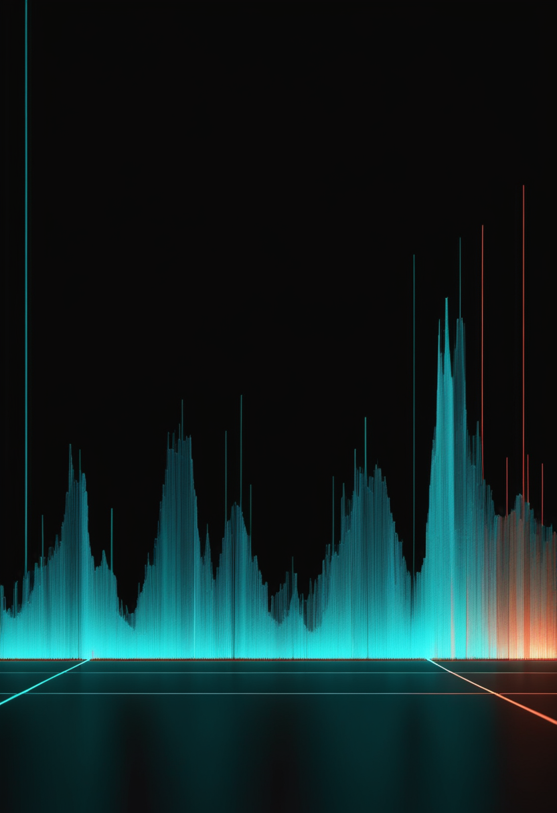
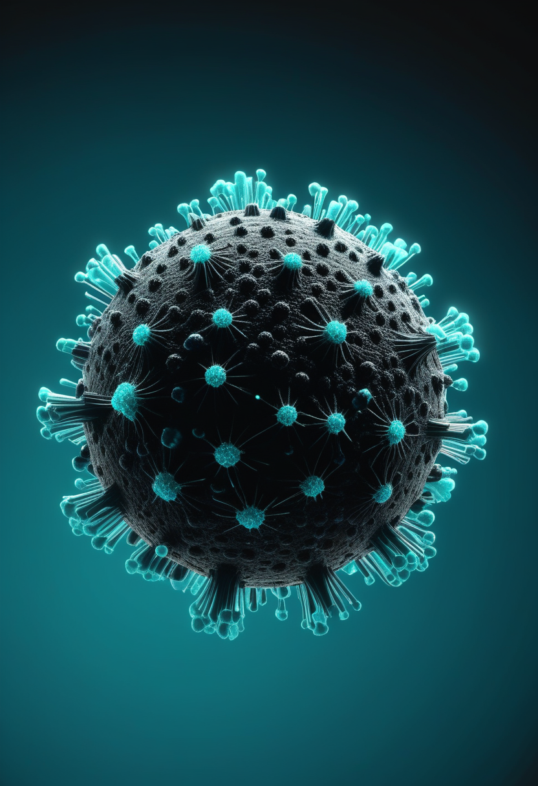

11月25日、神舟24号がパキスタンのムハンマド・ジーシャン・アリ氏を乗せて酒泉から打ち上げられ、同日中に中国宇宙ステーション『天宮』へドッキングした。中国の有人宇宙計画で初めて外国人が参加する飛行が実現した。基盤の章では米国の麻疹が5,838例に拡大し『排除国でない』実態が続く様子を、自由の章ではParadromicsとNVIDIAの提携、独TUMの非侵襲型BCI試験という、ハードウェアの小型化・低侵襲化に向けた2つの歩みを届ける。美の章では、AIに意識はあるかという問いが『断定を避け、測り方を磨く』方向に進んでいることを取り上げる。
11月25日、長征2号Fロケットで酒泉衛星発射センターから打ち上げ(北京時間8時18分)、同日11時56分に中国宇宙ステーション『天宮』へドッキングした。パキスタンのムハンマド・ジーシャン・アリ氏(40)がペイロード専門家として搭乗し、中国の有人宇宙計画で初めて外国人が参加する飛行となった。アリ氏の滞在は約1週間の予定で、5月から係留中の神舟23号で帰還する。前号(11/25号)までは『本日打ち上げ予定』として搭乗者・時刻が確定した段階を報じており、今回打ち上げとドッキングの両方の成功が確定した。
米国で9月11日に承認されたScholar Rockのアピテグロマブ(商品名Isembyld、現行は点滴静注)は、欧州でも承認申請を進めていたが、製造施設のGMP(適正製造基準)問題でいったん申請を取り下げていた。その後、別の充填施設を使う形で10月8日にEMAへ再申請したと報じられている。再申請の事実は二次情報に基づくため要確認。
SMA Europeの患者体験調査(EUPESMA)によると、診断時点で治療も治験も利用できなかった人が58%、治療を中断した経験がある人が19%、新たな治療薬が必要だと考える人は82%に上った。国や年齢による治療アクセスの格差が依然として続いている(調査年・回答数は要確認)。
SMAの治療薬開発は承認・申請の手続きが各国で進む一方、患者自身の実感としては『診断時点で選べる治療がなかった』という声が今も半数を超える。制度と現場の体感の差は、この章で繰り返し見えてきたテーマである。
運動神経疾患の女性が自分の言葉で会話できるようになったParadromicsのConnexus(既報)は、現在カート型の装置で神経信号をテキスト・音声に変換している。Wiredは11月23日、同社が解読AIをより高速かつ携帯可能な大きさに縮小するためNVIDIAと提携したと報じた。報道は1件のみで、提携の詳細や実現時期は確認できていない。
ミュンヘン工科大学(TUM)は11月23日、同大発のFUTRUE Neurosciences社が開発した試作ブレイン・コンピュータ・インターフェースを、手術中の患者に初めて使用したと発表した。512個の微小電極を脳表面に置くが組織を貫通しない非侵襲型で、覚醒下腫瘍摘出術の最中に信号を記録し、手術後に取り外した。将来的には麻痺のある人がロボットハンドを操作し、感覚フィードバックで触覚を得ることを目指すとしている。
埋め込み型のハードウェアはいずれも『携帯できる大きさ』と『組織を傷めない接触』という、同じ壁に別の角度から挑んでいる。視線入力分野の新発表は今号も確認できなかった。

CDCの集計によると、11月19日時点の米国の麻疹患者は5,838例となり、1991年以来初めて5,000例を超えた水準がさらに拡大している。最多のペンシルベニア州は1,631例(前号時点の1,589例から増加)で、同州の麻疹関連死は11月20日時点で8人目(既報)。米国は11月中旬にPAHOから麻疹『排除』の地位喪失を正式に通知されている。全米の死者数は集計方法によって差があり要確認。

専門家によると、米国内でエムポックスは引き続き循環しており、2026年の月間報告数は104〜192例で推移している。流行が収まったとの誤解がある一方、多くの住民が流行継続を認識していないと注意が促されている。
麻疹は『排除国でない米国』としての現実が数字で積み重なり続け、エムポックスは大きく報じられないまま静かに循環している。どちらも、ニュースの波が引いた後も実態が止まっていないことを示している。
11月25日、パキスタンのムハンマド・ジーシャン・アリ氏を乗せた神舟24号が酒泉から打ち上げられ、同日中に中国宇宙ステーション『天宮』へドッキングした。中国の有人宇宙計画で初の国際共同飛行となる。詳しくは本号の今日の一本を参照。
LHCb実験は、B⁰中間子がミュー粒子と反ミュー粒子に崩壊する極めてまれな現象の証拠を報告した(11月3日のセミナーで発表)。2024〜25年のデータで統計的有意性は約3.0σ(発見を確定する5σには届かない)。崩壊の割合は約100億分の1.1〜1.3と見積もられ、標準模型の予測値(約1.03)とおおむね整合する。1984年以来40年以上続く探索の節目となった。
中国科学院の研究者が、NASAのTESS衛星が記録した星の脈動データを解析し、JWSTの輝度較正に使われる星HD 158485に伴星があることを発見したと報じられた(11月23日)。JWSTの既存の較正結果に誤りがあることを直接示すものではないとしている。
初の外国人飛行士を迎えた神舟24号は、国境を越えた宇宙探査の新たな一歩になった。CERNの40年探索とJWST較正星の発見は、どちらも『長年積み重ねたデータの中から、まれな兆候を見つけ出す』という地道な作業の成果である。
Natureに掲載された論考が、AIに意識があるか否かを断定しようとする議論に慎重さを求めた(11月24日ごろ公開、PubMed収載)。意識の有無を判定する合意済みの基準はまだ存在せず、不確実性を明示することこそが今重要だという立場を示した。
大規模言語モデルの内部に人為的な『思考』を注入し、モデル自身がそれに気づけるかを調べる研究が相次いでいる。一部の結果はより単純な仕組みで説明できるとの追試もあり、これを『内省』と呼べるかどうかは活発な論争が続いている。
Marx氏とGilon氏は、記憶の保存と想起を支える分子レベルの仕組みこそが、ヒトの思考・意識をAIから分ける可能性があると論じた(International Journal of Psychiatry Research)。理論的な提案であり、実証研究ではない(11月25日)。
AIに意識はあるかという問いは、『断定を避け、測り方を磨く』という方法論の議論に移っている。記憶という生物学的な仕組みに注目する視点は、その境界線を考える新しい軸を加えた。
木曜日の便り。神舟24号は打ち上げとドッキングの両方に成功し、初めての外国人飛行士を『天宮』へ迎えた。基盤の章では、米国の麻疹が5,838例に拡大し『排除国でない』現実が続いていることと、エムポックスが報じられないまま静かに循環している様子を届けた。自由の章では、ParadromicsとNVIDIAの提携、独TUMの非侵襲型512電極BCI試験という、ハードウェアの小型化・低侵襲化に向けた2つの歩みを、命の章では欧州のSMA患者調査とアピテグロマブのEU再申請を取り上げた。美の章では、AIに意識はあるかという問いが、断定よりも測り方を磨く方向へ進んでいることを伝えた。
良い一日を。 — JaH